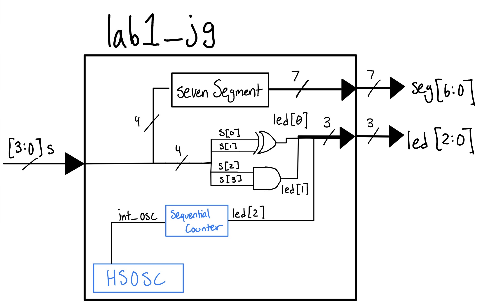
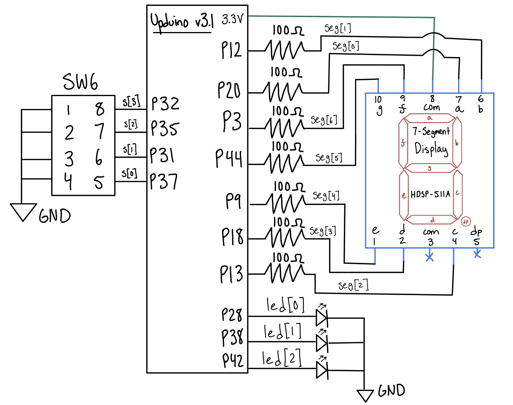

Lab 2: Multiplexed 7-Segment Display
Introduction
In this lab, a time-multiplexed dual 7-segment display and a keypad scanning circuit were implemented on the UPduino v3.1 FPGA. Two independent 4-bit hexadecimal values are provided via DIP switches: one from the on-board switch bank and one from a breadboard DIP switch. These two values are displayed simultaneously on a dual 7-segment display by rapidly alternating between the two digits, so that a single shared sevenSegment decoder module and a single set of cathode pins drive both digits. A 2N3906 PNP transistor circuit sources the large anode current required by each digit. A scanning circuit drives the four rows of a matrix keypad through 2N3904 NPN transistors wired as open-collector outputs, and the four keypad columns are read back into the FPGA and driven out onto LEDs, so that pressing a key blinks an LED.
Design and Testing Methodology
FPGA Implementation
| Name | Type | Description | ||
|---|---|---|---|---|
| clk | internal | 24 MHz internal oscillator (HSOSC) |
||
| reset | input | Active low; holds both counters at zero | ||
| s1[3:0] | input | Hex value shown on the first digit | ||
| s2[3:0] | input | Hex value shown on the second digit | ||
| cols[3:0] | input | Keypad columns, externally pulled up | ||
| rows[3:0] | output | One-hot scan pattern to the NPN row drivers | ||
| led[3:0] | output | Column readback; lights when a key in the scanned row is held | ||
| active | output | PNP base for digit 1; low turns that digit on | ||
| inactive | output | PNP base for digit 2; low turns that digit on | ||
| seg[6:0] | output | Shared 7-segment cathode drive (Common Anode) |
The same 24 MHz high-speed oscillator (HSOSC) from Lab 1 was used to clock the design. The top-level module lab2_jg contains only module instances and assign statements: the oscillator, one counter instance acting as the multiplexing divider, one scanning instance for the keypad, and the sevenSegment decoder reused unchanged from Lab 1. No counter is written inline, and both counters in the design are parametrized instances of the same counter module from Lab 1.
The multiplexing counter is instantiated with a maximum count of 50,000 and a width of 18 bits. The select signal, called state, is generated by comparing the count against the half-way point rather than by tapping a single counter bit, so that the divide ratio is set entirely by the parameter. state drives the multiplexer that selects between s1 and s2, and at the same time controls the active and inactive signals to the PNP transistors, which switch the COM ports. Because the 2N3906 is a PNP with its emitter tied to 3.3 V, a low base turns a digit on, so active is low while state is low and digit 1 is lit, and inactive is low while state is high and digit 2 is lit. The two signals are always complementary, so exactly one digit is ever illuminated. The selected 4-bit value s is fed into the sevenSegment decoder, which works as previously in Lab 1, mapping hex numbers 0 to F onto the display.
The scanning module follows the structure required by the specifications: a single counter instance holds the state, and four assign statements convert that count into the one-hot row outputs. It contains no sequential logic of its own, and it inherits the active-low reset and active-high enable of the underlying counter, so it is both resettable and enable-able. Each asserted row bit turns on its 2N3904, which pulls that keypad row to ground, while the deasserted rows leave their transistors off and float. A key pressed in the currently scanned row therefore pulls its column low against the pull-up resistor, and the top level inverts the columns before driving the LEDs. Because the deasserted rows float rather than driving high, two keys pressed in the same column connect a grounded row to a floating row instead of shorting two drivers together, so multiple simultaneous presses are tolerated without producing indeterminate voltages.
Multiplexing and Scanning Frequency Calculations
The multiplexing counter wraps every 50,000 cycles at 24 MHz, and state is high for the second half of each wrap, so each digit is refreshed once per wrap:
\[ f_{\text{display}} = \frac{24,000,000}{50,000} = 480 \text{ Hz per digit} \]
\[ t_{\text{on}} = \frac{25,000}{24,000,000} \approx 1.04 \text{ ms per digit} \]
480 Hz is well above the flicker threshold of the human eye, and 1.04 ms of on-time is long compared to the switching time of the transistors, so there is neither flicker nor bleeding between the digits. The multiplexing counter requires 18 bits, since
\[ 2^{18} = 262,144 > 50,000 \]
The scanning counter uses a maximum count of 12,000,000, so one full rotation of the four rows takes 0.5 s and each row is asserted for one quarter of that:
\[ f_{\text{scan}} = \frac{24,000,000}{12,000,000} = 2 \text{ Hz} \]
\[ t_{\text{row}} = \frac{12,000,000 / 4}{24,000,000} = 125 \text{ ms} \]
Each row bit is high for 125 ms once every 500 ms, meeting the 2 Hz toggle requirement. This requires 24 bits, which is
\[ 2^{24} = 16,777,216 \]
Technical Documentation:
The source code for the project can be found in the associated Github Repo.
Block Diagram
Lab 2 Block Diagram // Joaquin Gonzalez-Salgado // September 12 2026

The block diagram in Figure 1 demonstrates the overall architecture of the design. The top-level module lab2_jg includes four submodules: a high-speed oscillator block (HSOSC), a counter instance acting as the multiplexing clock divider, a scanning module that drives the keypad rows, and the combinational logic for the 7-segment display (sevenSegment). The scanning module itself instantiates a second counter, so every counter in the design is a parametrized instance of the Lab 1 module. The remaining top-level logic consists of the comparator that produces state, the 2:1 multiplexer between s1 and s2, the inverter that produces inactive, and the inverters between the keypad columns and the LEDs.
Schematic
Lab 2 Wiring Schematic // Joaquin Gonzalez-Salgado // September 12 2026

Figure 2 Shows the wiring approach for this lab. 270 \(\Omega\) resistors were used for the LEDs and the display segments, 510 \(\Omega\) resistors were used for the bases of the PNP and NPN transistors, and 10 k\(\Omega\) pull-ups were used on the keypad columns. All FPGA pin currents are kept below the 8 mA maximum given for LVCMOS33 outputs in Section 4.17 of the iCE40 UltraPlus datasheet.
The 7-segment display and the LEDs have a forward voltage of roughly 2.0 V, and the FPGA GPIO current should not exceed 8 mA. Ohm’s law gives the desired series resistor, choosing a current of 5 mA. This is shown in Equation 1:
\[ V = IR \implies R = \frac{V}{I} = \frac{3.3\,\text{V} - 2.0\,\text{V}}{0.005\,\text{A}} = 260\,\Omega \approx 270\,\Omega \tag{1}\]
With the 270 \(\Omega\) resistor actually used, each segment draws 4.8 mA, which is below the 8 mA limit. Every segment has its own resistor, so segment current does not depend on how many segments are lit and all digits are the same brightness. With all seven segments on, the common anode carries roughly 34 mA, far more than a single FPGA pin can source, which is the reason for the PNP transistor.
The 2N3906 PNP transistor has a forward voltage drop from the base to the emitter of about 0.7 V. With the same 8 mA constraint, and again choosing 5 mA, the base resistor is found in Equation 2:
\[ V = IR \implies R = \frac{V}{I} = \frac{3.3\,\text{V} - 0.7\,\text{V}}{0.005\,\text{A}} = 520\,\Omega \approx 510\,\Omega \tag{2}\]
With 510 \(\Omega\) the base current is 5.1 mA, under the pin limit. The forced beta is roughly 6.6, far below the 2N3906 minimum \(h_{FE}\) of 60, so the transistor is fully saturated and passes the entire anode current.
The 2N3904 NPN transistors used as open-collector row drivers have the same 0.7 V base-emitter drop, so the same 510 \(\Omega\) base resistor applies and each asserted row sources 5.1 mA from its FPGA pin. Only one row is asserted at a time. The collector load is only the column pull-ups, at worst 1.3 mA with four keys held in the scanned row, so the NPN is deeply saturated and each pressed column reads a solid logic low.
*Note, the two resistor approximations were made as those were the resistor values available.
Results and Discussion
The Design was a Success!
The design successfully met all lab requirements. Both display digits independently show the correct hexadecimal representation of s1 and s2, with all 16 digits (0–F) rendering correctly with unique, distinguishable shapes such as b versus 8. The multiplexed display shows no visible flicker at the 480 Hz per-digit refresh rate, and because each digit gets a clean 1.04 ms window with the other anode fully off, there is no bleeding between the two digits. Since each segment has its own resistor, brightness is identical regardless of how many segments are lit.
The scanning outputs rotate through 1000, 0100, 0010, and 0001 with each bit toggling at 2 Hz, and pressing any key blinks the LED corresponding to that key’s column. The open-collector row drivers make this tolerant of multiple presses: two keys held in the same row light two LEDs at once, and two keys held in the same column blink their shared LED on both corresponding row phases without producing an indeterminate voltage. All of this was verified both in QuestaSim and on the breadboard.
Testbench Simulation


Figure 3, Figure 4, and Figure 5 show screenshots of the QuestaSim simulations. Per the specifications, the Lab 1 decoder simulation was not repeated, since that module was already verified. Two new automatic testbenches were written instead. The scanning testbench instantiates the module with a short maximum count so that a full cycle takes a handful of clocks, and uses asserts to check every one of the four output values, all four transitions between them, that the output freezes while enable is low, and that the output returns to 1000 when reset is asserted mid-cycle. The top-level testbench supplies a simulation stub for the HSOSC primitive, which the simulator cannot elaborate on its own, and uses asserts to check that active and inactive are always complementary, that the cathode pattern matches the expected encoding of s1 while digit 1 is on and of s2 while digit 2 is on, and that the LED outputs always equal the inverted column inputs as the inputs are changed during the run. All asserts passed.
Conclusion
This lab demonstrated time-multiplexing to share a single 7-segment decoder and a single set of I/O pins between two digits, and showed how transistors can move current-driving work off the FPGA pins: PNPs to source the anode current the FPGA cannot supply, and NPNs to convert ordinary push-pull outputs into open-collector row drivers that tolerate simultaneous key presses. The sevenSegment decoder was reused from Lab 1 without any changes, and both counters are parametrized instances of the Lab 1 counter, which kept the new HDL down to one small scanning module and a handful of assign statements.
This lab took 9 hours. Setting up the breadboard was slightly difficult, due to the number of components necessary for the lab.
AI Prototype Summary
The purpose of the AI Prototype is to experiment with utilizing AI as a coding assistant, and analyze the quality, speed, and precision that an LLM can generate code. The prompts for this week are shown below. The first was entered in a fresh conversation, and the second was entered in a new conversation with my Lab 1 files attached as context:
Prompt 1: Write SystemVerilog HDL to time multiplex a single seven segment decoder (that decodes from four bits to a common anode seven segment display) to decode two sets of input bits and drive two sets of seven output bits.
Prompt 2: Write SystemVerilog HDL to time multiplex a single seven segment decoder (that decodes from four bits to a common anode seven segment display) to decode two sets of input bits and drive two sets of seven output bits.
module top_seven_seg_mux ( input logic clk, input logic rst_n, input logic [3:0] in_data0, input logic [3:0] in_data1, output logic [6:0] seg, output logic [1:0] anode );
logic [15:0] refresh_counter;
logic mux_sel;
logic [3:0] current_nibble;
always_ff @(posedge clk or negedge rst_n) begin
if (!rst_n) refresh_counter <= '0;
else refresh_counter <= refresh_counter + 1'b1;
end
assign mux_sel = refresh_counter[15];
always_comb begin
if (mux_sel == 1'b0) begin
current_nibble = in_data0;
anode = 2'b10;
end else begin
current_nibble = in_data1;
anode = 2'b01;
end
end
always_comb begin
case (current_nibble)
4'h0: seg = 7'b100_0000;
4'h1: seg = 7'b111_1001;
4'h2: seg = 7'b010_0100;
4'h3: seg = 7'b011_0000;
4'h4: seg = 7'b001_1001;
4'h5: seg = 7'b001_0010;
4'h6: seg = 7'b000_0010;
4'h7: seg = 7'b111_1000;
4'h8: seg = 7'b000_0000;
4'h9: seg = 7'b001_0000;
4'hA: seg = 7'b000_1000;
4'hB: seg = 7'b000_0011;
4'hC: seg = 7'b100_0110;
4'hD: seg = 7'b010_0001;
4'hE: seg = 7'b000_0110;
4'hF: seg = 7'b000_1110;
default: seg = 7'b111_1111;
endcase
endendmodule
module top_multiplex ( input logic reset, input logic [3:0] s1, input logic [3:0] s2, output logic [6:0] seg, output logic [1:0] anode );
logic int_osc;
logic [31:0] counter = 0;
logic [3:0] mux_digit;
logic mux_clk;
HSOSC #(.CLKHF_DIV(2'b01))
hf_osc (.CLKHFPU(1'b1), .CLKHFEN(1'b1), .CLKHF(int_osc));
always_ff @(posedge int_osc) begin
if (reset == 0) counter <= 0;
else counter <= counter + 1;
end
assign mux_clk = counter[15];
always_comb begin
if (mux_clk) begin
mux_digit = s1;
anode = 2'b10;
end else begin
mux_digit = s2;
anode = 2'b01;
end
endendmodule
Reflection:
New week, new AI model! This week is Gemini-3.5 Flash. Gemini-3.5 Flash was able to create code off the first prompt that was synthesizable in Lattice Radiant, and produced a file that seemed very reasonable. The only concern was that the file had an external clk and did not use the oscillator on the FPGA board. It also inlined both the counter and the decoder into a single module, which the lab specs explicitly forbid.
For the second prompt, after uploading my files to give Gemini-3.5 Flash context for the problem, it could not get the code to synthesize. This shocked me, because I would have assumed the context would have been more helpful, but that was not the case. Although Gemini-3.5 Flash incorporated the oscillator in the design, the module it produced never assigns the segment outputs at all, so the decoder it was supposed to be multiplexing is simply missing. Neither version used a separate counter module, and neither attempted the scanning half of the lab.
The next time I utilize an LLM in my workflow, I think I will ask it to produce code on its own first, then provide context in the same AI chat, allowing for it to incorporate those aspects into its already written design. I would also state the structural constraints up front, since the model defaults to one flat module and both attempts had to be restructured into submodules anyway.